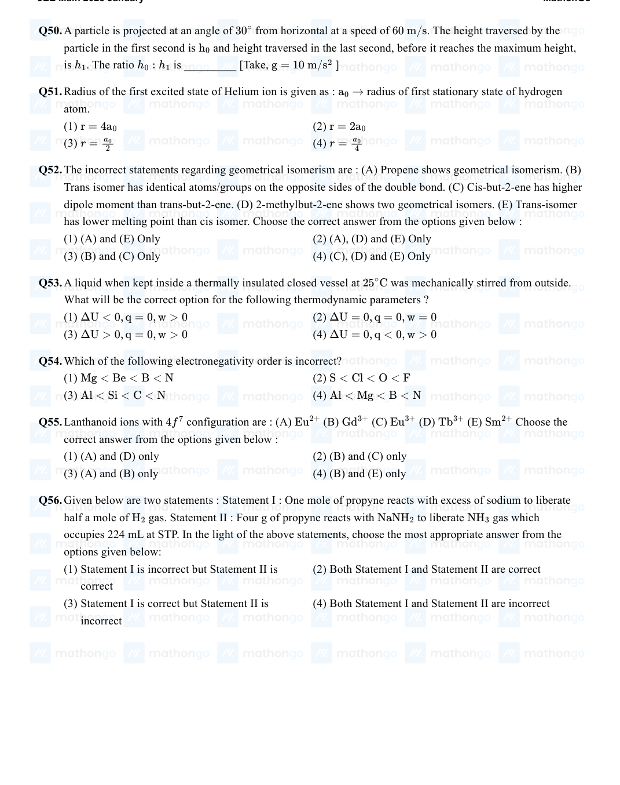

Filter questions
📌 CHEM-THERMODY-FIRST_LAW_HEAT_CAPACITY
↗ Cluster set
Q1
CHEM-2021-0101-S1-Q031
2021 | 17 Mar | Shift 1
—
MCQ
The absolute value of the electron gain enthalpy of halogens satisfies:
Answer: C
Q2
CHEM-2021-0101-S1-Q055
2021 | 17 Mar | Shift 1
—
Integer
The standard enthalpies of formation of Al2 O3 and CaO are −1675 kJ and −635 kJ respectively. For the reaction 3CaO + 2Al →3Ca + Al2 O3 the standard reaction enthalpy ΔrH0 = ________ kJ. (Round off to the Nearest Integer).
Answer: 230
Q3
CHEM-2021-0101-S1-Q054
2021 | 18 Mar | Shift 1
—
Integer
For the reaction C2H6 →C2H4 + H2 the reaction enthalpy ΔrH in kJmol−1 is (Round off to the Nearest Integer). [Given: Bond enthalpies in kJmol−1: C −C: 347, C = C: 611; C −H: 414, H −H: 436]
Answer: 128
Q4
CHEM-2021-0101-S1-Q053
2021 | 22 Jul | Shift 1
—
Integer
If the standard molar enthalpy change for combustion of graphite powder is −2.48 × 102 kJ mol−1, the amount of heat generated on combustion of 1 g of graphite powder in kJ (Nearest integer):
Answer: 21
Q5
CHEM-2021-0101-S1-Q031
2021 | 24 Feb | Shift 1
—
MCQ
Consider the elements Mg, Al, S, P and Si, the correct increasing order of their first ionisation enthalpy is:
Answer: A
Q6
CHEM-2021-0101-S1-Q053
2021 | 25 Feb | Shift 1
—
Integer
The ionization enthalpy of Na+ formation from Na(g) is 495.8 kJ mol−1, while the electron gain enthalpy of Br is −325.0 kJ mol−1. Given the lattice enthalpy of NaBr is −728.4 kJ mol −1. The energy for the formation of NaBr ionic solid is (−)_____10−1 kJ mol−1
Answer: 5576
Q7
CHEM-2021-0101-S2-Q042
2021 | 25 Feb | Shift 2
—
MCQ
The correct order of bond dissociation enthalpy of halogens is:
Answer: D
Q8
CHEM-2021-0101-S1-Q032
2021 | 25 Jul | Shift 1
—
MCQ
At 298.2 K the relationship between enthalpy of bond dissociation (in kJ mol−1) for hydrogen EH and its isotope, deuterium ED, is best described by:
Answer: C
Q9
CHEM-2021-0101-S1-Q054
2021 | 25 Jul | Shift 1
—
Integer
At K, the enthalpy of fusion of a solid is mol−1 and the enthalpy of vaporisation of the liquid 298 X 2.8 kJ X is 98.2 kJ mol−1. The enthalpy of sublimation of the substance X in kJ mol−1 is ______. (in nearest integer)
Answer: 101
Q10
CHEM-2021-0101-S1-Q053
2021 | 26 Aug | Shift 1
—
Integer
The Born-Haber cycle for is evaluated with the following data: KCl ΔfHΘ for KCl = −436.7 kJmol−1; ΔsubHΘ for K = 89.2 kJmol−1; Δionization HΘ for K = 419.0 kJ mol −1; Δelectron gain HΘ for Cl(g) = −348.6 kJmol−1 HΘ kJmol−1 Δbond for Cl2 = 243.0 The magnitude of lattice enthalpy of KCl in kJmol−1 is (Nearest integer)
Answer: 718
Q11
CHEM-2021-0101-S1-Q057
2021 | 26 Aug | Shift 1
—
Integer
These are physical properties of an element (A) Sublimation enthalpy (B) Ionisation enthalpy (C) Hydration enthalpy (D) Electron gain enthalpy The total number of above properties that affect the reduction potential is (Integer answer)
Answer: 3
Q12
CHEM-2021-0101-S2-Q031
2021 | 26 Feb | Shift 2
—
MCQ
The correct order of electron gain enthalpy is:
Answer: C
Q13
CHEM-2021-0101-S2-Q055
2021 | 27 Aug | Shift 2
—
Integer
Data given for the following reaction is as follows: FeO(s) + C(graphite) ⟶Fe(s) + CO(g) Substance ΔfH°(kJmol−1) ΔS°(Jmol−1 K−1) FeO(s) −266.3 57.49 C(graphite) 0 5.74 Fe(s) 0 27.28 CO(g) −110.5 197.6 The minimum temperature in K at which the reaction becomes spontaneous is_____.(Integer answer)
Answer: 964
Q14
CHEM-2021-0101-S2-Q032
2021 | 27 Jul | Shift 2
—
MCQ
The CORRECT order of first ionisation enthalpy is:
Answer: C
Q15
CHEM-2021-0101-S1-Q052
2021 | 31 Aug | Shift 1
—
Integer
According to the following figure, the magnitude of the enthalpy change of the reaction in mol−1 A + B →M + N kJ is equal to __________. (Integer answer)
Answer: 45
Q16
CHEM-2021-0101-S2-Q031
2021 | 31 Aug | Shift 2
—
MCQ
The incorrect expression among the following is: ΔH° - TΔS°
Answer: B
Q17
CHEM-2021-0101-S2-Q033
2021 | 31 Aug | Shift 2
—
MCQ
Which one of the following statements is incorrect?
Answer: B
Q18
CHEM-2022-0101-S1-Q055
2022 | 25 Jun | Shift 1
—
Integer
The standard entropy change for the reaction 4Fes + 3O2g →2Fe2O3s is−550 J K−1 at 298 K mol−1]. [Given: The standard enthalpy change for the reaction is−165 kJ The temperature in K at which the reaction attains equilibrium is (Nearest Integer)
Answer: 300
Q19
CHEM-2022-0101-S2-Q032
2022 | 25 Jun | Shift 2
—
MCQ
What is the correct oder of electron gain enthalpy of Cl, F, Te, Po
Answer: B
Q20
CHEM-2022-0101-S1-Q052
2022 | 29 Jun | Shift 1
—
Integer
17.0 g of NH3 completely vapourises at −33.42 °C and 1 bar pressure and the enthalpy change in the process is 23.4 kJ mol−1. The enthalpy change for the vapourisation of 85 g of NH3 under the same conditions is kJ.
Answer: 117
Q21
CHEM-2022-0101-S2-Q033
2022 | 29 Jun | Shift 2
—
MCQ
Given below are two statements. One is labelled as Assertion A and the other is labelled as Reason R. Assertion A: The first ionization enthalpy for oxygen is lower than that of nitrogen. Reason R: The four electrons in 2p orbitals of oxygen experience more electron-electron repulsion. In the light of the above statements, choose the correct answer from the options given below.
Answer: A
Q22
CHEM-2023-0101-S1-Q053
2023 | 01 Feb | Shift 1
—
Integer
At 25°C, the enthalpy of the following processes are given: →2OH(g)ΔHo mol−1 H2 ( g) + O2 ( g) = 78 kJ H2 ( g) + 1 / 2O2 ( g) →H2O(g)ΔH0 = - 242 kJ mol−1 H2 ( g) →2H(g)ΔHo = 436 kJ mol−1 1 / 2O2 ( g) →O(g)ΔH0 = 249 kJ mol−1 What would be the value of X for the following reaction? (Nearest integer) H2Og →Hg + OHg ∆Ho = X kJmol−1
Answer: 499
Q23
CHEM-2023-0101-S2-Q040
2023 | 06 Apr | Shift 2
—
MCQ
Ion having highest hydration enthalpy among the given alkaline earth metal ions is:
Answer: B
Q24
CHEM-2023-0101-S2-Q047
2023 | 08 Apr | Shift 2
—
Integer
If the boiling points of two solvents X and Y (having same molecular weights) are in the ratio 2: 1 and their enthalpy of vaporizations are in the ratio 1: 2, then the boiling point elevation constant of X is m times the boiling point elevation constant of. The value of is (nearest integer). Y m
Answer: 4
Q25
CHEM-2023-0101-S1-Q034
2023 | 11 Apr | Shift 1
—
MCQ
For elements B, C, N Li, Be, O and F, the correct order of first ionisation enthalpy is
Answer: D
Q26
CHEM-2023-0101-S1-Q037
2023 | 12 Apr | Shift 1
—
Integer
One mole of an ideal gas at 350 K is in a 2.0 L vessel of thermally conducting walls, which are in contact with the surroundings. It undergoes isothermal reversible expansion from 2.0 L to 3.0 L against a constant pressure of 4 atm. The change in entropy of the surroundings (ΔS) is _____ J K–1 (Nearest integer) Given: R = 8.314 J K−1 mol−1.
Answer: 4
Q27
CHEM-2023-0101-S1-Q042
2023 | 12 Apr | Shift 1
—
MCQ
Given below are two statements: Statement I: Boron is extremely hard indicating its high lattice energy. Statement II: Boron has highest melting and boiling point compared to its other group members. In the light of the above statements, choose the most appropriate answer from the options given below
Answer: D
Q28
CHEM-2023-0101-S2-Q035
2023 | 13 Apr | Shift 2
—
MCQ
Given below are two statements, one is labelled as Assertion A and the other is labelled as Reason R. Assertion A: Isotopes of hydrogen have almost same chemical properties, but difference in their rates of reactions. Reason R: Isotopes of hydrogen have different enthalpy of bond dissociation. In the light of the above statements, choose the most appropriate answer from the options given below:
Answer: B
Q29
CHEM-2023-0101-S1-Q049
2023 | 25 Jan | Shift 1
—
MCQ
Inert gases have positive electron gain enthalpy. Its correct order is
Answer: B
Q30
CHEM-2023-0101-S1-Q060
2023 | 25 Jan | Shift 1
—
Integer
An athlete is given 100 g of glucose (C6H12O6) for energy. This is equivalent to 1800 kJ of energy. The 50% of this energy gained is utilized by the athlete for sports activities at the event. In order to avoid storage of energy, the weight of extra water he would need to perspire is (Nearest integer) Assume that there is no _____g other way of consuming stored energy. Given: The enthalpy of evaporation of water is 45 kJ mol−1 Molar mass of C, H&O are 12.1 and 16 g mol−1.
Answer: 360
Q31
CHEM-2023-0101-S2-Q032
2023 | 29 Jan | Shift 2
—
MCQ
Given below are two statements: Statement I: The decrease in first ionization enthalpy from B to Al is much larger than that from Al to Ga. Statement II: The d orbitals in Ga are completely filled. In the light of the above statements, choose the most appropriate answer from the options given below
Answer: A
Q32
CHEM-2023-0101-S1-Q053
2023 | 31 Jan | Shift 1
—
Integer
The enthalpy change for the conversion of 1 2Cl2 (g) to Cl- ( aq ) is ( - ) kJmol−1 (Nearest integer) Given: Δdis HCl2 0 = 240kJmol-1. ( g ) ΔegHCl o ( g ) = - 350kJmol-1, o 380kJmol-1 ΔhydHCl - = - ( g ) 1 1012
Answer: 610
Q33
CHEM-2023-0101-S2-Q034
2023 | 31 Jan | Shift 2
—
MCQ
Given below are two statements: one is labelled as Assertion
Answer: A
Q34
CHEM-2023-0101-S2-Q036
2023 | 31 Jan | Shift 2
—
Integer
Enthalpies of formation of CCl4( g), H2O(g), CO2( g) and HCl are −105, −242, −394 and −92 kJ mol−1 respectively. The magnitude of enthalpy of the reaction given below is kJmol−1. (nearest integer) CCl4( g) + 2H2O(g) →CO2( g) + 4 HCl(g)
Answer: 3
Q35
CHEM-2023-0101-S2-Q041
2023 | 31 Jan | Shift 2
—
MCQ
The number of alkali metal(s), from Li, K, Cs, Rb having ionization enthalpy greater than 400 kJ mol−1 and forming stable super oxide is
Answer: A
Q36
CHEM-2024-0101-S2-Q032
2024 | 01 Feb | Shift 2
—
MCQ
Given below are two statements: Statement (I): Both metal and non-metal exist in $\mathrm{p}$ and d-block elements. Statement (II): Non-metals have higher ionisation enthalpy and higher electronegativity than the metals. In the light of the above statements, choose the most appropriate answer from the option given below:
Answer: B
Q37
CHEM-2024-0101-S2-Q044
2024 | 01 Feb | Shift 2
—
MCQ
The transition metal having highest 3rd ionisation enthalpy is:
Answer: B
Q38
CHEM-2024-0101-S1-Q032
2024 | 04 Apr | Shift 1
—
MCQ
The correct order of first ionization enthalpy values of the following elements is:
Answer: A
Q39
CHEM-2024-0101-S2-Q032
2024 | 04 Apr | Shift 2
—
MCQ
The correct order of the first ionization enthalpy is
Answer: C
Q40
CHEM-2024-0101-S2-Q033
2024 | 04 Apr | Shift 2
—
MCQ
Given below are two statements: Statement I: The correct order of first ionization enthalpy values of Li, Na, F and Cl is Na < Li < Cl < F. Statement II: The correct order of negative electron gain enthalpy values of Li, Na, F and Cl is Na < Li < F < Cl In the light of the above statements, choose the correct answer from the options given below:
Answer: D
Q41
CHEM-2024-0101-S2-Q057
2024 | 04 Apr | Shift 2
—
Integer
A first row transition metal with highest enthalpy of atomisation, upon reaction with oxygen at high temperature forms oxides of formula M2On (where n = 3, 4, 5). The 'spin-only' magnetic moment value of the amphoteric oxide from the above oxides is ______ (near integer) (Given atomic number: BM Sc: 21, Ti: 22, V: 23, Cr: 24, Mn: 25, Fe: 26, Co: 27, Ni: 28, Cu: 29, Zn: 30 )

Answer: 0
Q42
CHEM-2024-0101-S1-Q035
2024 | 05 Apr | Shift 1
—
MCQ
Given below are two statements: One is labelled as Assertion
Answer: C
Q43
CHEM-2024-0101-S2-Q042
2024 | 05 Apr | Shift 2
—
MCQ
For the electro chemical cell If E0 = 0.46 V and E0 = 0.34 V. Which of the following is correct? (M2+/M) (x/X2−)
Answer: D
Q44
CHEM-2024-0101-S2-Q054
2024 | 06 Apr | Shift 2
—
Integer
For the reaction at 298 K, 2 A + B →C. ΔH = 400 kJ mol−1 and ΔS = 0.2 kJ mol−1 K−1. The reaction will become spontaneous above K.
Answer: 2000
Q45
CHEM-2024-0101-S1-Q032
2024 | 08 Apr | Shift 1
—
MCQ
List - I List - II (Elements) (Properties in their respective groups) A. Cl, S I. Elements with highest electronegativity B. Ge, As II. Elements with largest atomic size Match List I with List II Choose Elements which show properties of both C. Fr, Ra III. metals and non-metal Elements with highest negative electron D. F, O IV. gain enthalpy the correct answer from the options given below:
Structured List-I / List-II view
| Label | List-I | List-II | Match |
|---|---|---|---|
| A | Cl, S | Elements with highest electronegativity | I |
| B | Ge, As | Elements with largest atomic size Match List I with List II | II |
| C | Fr, Ra | metals and non-metal Elements with highest negative electron | III |
| D | F, O | gain enthalpy the correct answer from the options given below: | IV |
Answer: C
Q46
CHEM-2024-0101-S2-Q031
2024 | 08 Apr | Shift 2
—
MCQ
Identify the correct statements about p-block elements and their compounds.
Answer: B
Q47
CHEM-2024-0101-S1-Q032
2024 | 09 Apr | Shift 1
—
MCQ
Given below are two statements: Statement (I): The oxidation state of an element in a particular compound is the charge acquired by its atom on the basis of electron gain enthalpy consideration from other atoms in the molecule. Statement (II): pπ −pπ bond formation is more prevalent in second period elements over other periods. In the light of the above statements, choose the most appropriate answer from the options given below:
Answer: C
Q48
CHEM-2024-0101-S2-Q059
2024 | 09 Apr | Shift 2
—
Integer
A transition metal ' M ' among Sc, Ti, V, Cr, Mn and Fe has the highest second ionisation enthalpy. The spin- only magnetic moment value of M+ ion is _______. BM (Near integer) (Given atomic number Sc: 21, Ti: 22, V: 23, Cr: 24, Mn: 25, Fe: 26 ) M2+ + H2 S →A (Black precipitate) + by product
Answer: 6
Q49
CHEM-2024-0101-S1-Q032
2024 | 29 Jan | Shift 1
—
MCQ
Given below are two statements: one is labelled as Assertion A and the other is labelled as Reason R: Assertion A: The first ionisation enthalpy decreases across a period. Reason R: The increasing nuclear charge outweighs the shielding across the period. In the light of the above statements, choose the most appropriate from the options given below:
Answer: C
Q50
CHEM-2024-0101-S2-Q032
2024 | 29 Jan | Shift 2
—
MCQ
The element having the highest first ionization enthalpy is
Answer: C
Q51
CHEM-2024-0101-S2-Q033
2024 | 29 Jan | Shift 2
—
MCQ
Given below are two statements: Statement I: Fluorine has most negative electron gain enthalpy in its group. Statement II: Oxygen has least negative electron gain enthalpy in its group. In the light of the above statements, choose the most appropriate from the options given below.
Answer: D
Q52
CHEM-2024-0101-S2-Q041
2024 | 29 Jan | Shift 2
—
MCQ
Which of the following statements are correct about Zn, Cd and Hg? A. They exhibit high enthalpy of atomization as the d-subshell is full. B. Zn and Cd do not show variable oxidation state while Hg shows +I and + II. C. Compounds of Zn, Cd and Hg are paramagnetic in nature. D. and are called soft metals. Zn, Cd Hg Choose the most appropriate from the options given below:
Answer: A
Q53
CHEM-2024-0101-S2-Q054
2024 | 29 Jan | Shift 2
—
Integer
Standard enthalpy of vapourisation for CCl4 is 30.5 kJ mol−1. Heat required for vapourisation of 284 g of gmol−1; CCl4 at constant temperature is __________ kJ. (Given molar mass in C = 12, Cl = 35.5 ) Round off your answer to the nearest integer.
Answer: 56
Q54
CHEM-2024-0101-S2-Q033
2024 | 30 Jan | Shift 2
—
MCQ
Given below are two statements: One is labelled as Assertion A and the other is labelled as Reason R. Assertion A: H2Te is more acidic than H2 S. Reason R: Bond dissociation enthalpy of H2Te is lower than H2 S. In the light of the above statements. Choose the most appropriate from the options given below.
Answer: B
Q55
CHEM-2024-0101-S2-Q052
2024 | 30 Jan | Shift 2
—
Integer
Two reactions are given below: 2Fe + 3 2O2 →Fe2O3, ΔHo = - 822 kJ / mol ( s ) ( g ) ( s ) C ( s ) + 1 2O2 →CO, ΔHo = - 110 kJ / mol ( g ) ( g ) Then enthalpy change for following reaction 3C ( s ) + Fe2O3 ( s ) →2Fe ( s ) + 3CO ( g )
Answer: 492
Q56
CHEM-2024-0101-S1-Q031
2024 | 31 Jan | Shift 1
—
MCQ
The correct sequence of electron gain enthalpy of the elements listed below is A. Ar B. Br C. F D. S Choose the most appropriate from the options given below:
Answer: B
Q57
CHEM-2025-0101-S1-Q034
2025 | 28 Jan | Shift 1
—
MCQ
A Carnot engine (E) is working between two temperatures 473 K and 273 K. In a new system two engines - engine works between 473 K to 373 K and engine works between 373 K to 273 K. If and are E1 E2 η12, η1 η2 the efficiencies of the engines E, E1 and E2, respectively, then
Answer: D
Q58
CHEM-2025-0101-S1-Q054
2025 | 29 Jan | Shift 1
—
Integer
An element ' E ′ has the ionisation enthalpy value of 374 kJ mol−1. ' E ' reacts with elements A, B, C and D with electron gain enthalpy values of −328, −349, −325 and −295 kJ mol−1, respectively. The correct order of the products EA, EB, EC and ED in terms of ionic character is: (1) ED > EC > EB > EA (2) EA > EB > EC > ED (3) EB > EA > EC > ED (4) ED > EC > EA > EB
Answer: 3
Q59
CHEM-2025-0101-S1-Q057
2025 | 29 Jan | Shift 1
—
Integer
Given below are two statements: Statement ( I ): The radii of isoelectronic species increases in the order. Mg2+ Na+ F−< O2− < < Statement (II): The magnitude of electron gain enthalpy of halogen decreases in the order. Cl > F > Br > I In the light of the above statements, choose the most appropriate answer from the options given below: (1) Statement I is incorrect but Statement II is (2) Statement I is correct but Statement II is correct incorrect (3) Both Statement I and Statement II are incorrect (4) Both Statement I and Statement II are correct
Answer: 4
Q60
CHEM-2025-0101-S2-Q042
2025 | 29 Jan | Shift 2
—
MCQ
A poly-atomic molecule ( CV = 3R, CP = 4R, where R is gas constant) goes from phase space point A (PA = 105 Pa, VA = 4 × 10−6 m3) to point B (PB = 5 × 104 Pa, VB = 6 × 10−6 m3) to point C (PC = 104 Pa, VC = 8 × 10−6 m3). A to B is an adiabatic path and B to C is an isothermal path. The net heat absorbed per unit mole by the system is:
Answer: B
📌 CHEM-THERMODY-ENTROPY_GIBBS_SPONTANEITY
↗ Cluster set
Q61
CHEM-2021-0101-S2-Q052
2021 | 20 Jul | Shift 2
—
Integer
For a given chemical reaction A →B at 300 K the free energy change is −49.4 kJ mol−1 and the enthalpy mol−1. JK−1 mol−1. of reaction is 51.4 kJ The entropy change of the reaction is _________
Answer: 336
Q62
CHEM-2021-0101-S1-Q053
2021 | 26 Feb | Shift 1
—
Integer
For a chemical reaction A + B = C + D (ΔrHΘ = 80 kJ mol−1) the entropy change ΔrSΘ depends on the ΔrSΘ 2T(JK−1 mol−1) temperature T (in K ) as =. Minimum temperature at which it will become spontaneous is K. (Integer)
Answer: 200
Q63
CHEM-2021-0101-S1-Q056
2021 | 31 Aug | Shift 1
—
Integer
Consider the following cell reaction Cd(s) + Hg2 SO4( + 9 H2O(l) ⇌CdSO4 ⋅9 H2O(s) + 2 Hg(l). s) 5 5 The value of E0 is 4.315 V at 25°C. If ΔH°= −825.2 kJ mol−1, the standard entropy change ΔS° in cell J K−1 is _________. (Nearest integer) [Given: Faraday constant = 96487 C mol−1 ]
Answer: 25
Q64
CHEM-2022-0101-S2-Q058
2022 | 26 Jun | Shift 2
—
Integer
Cu(s) + Sn2+(0.001M) →Cu2+(0.01M) + Sn(s) The Gibbs free energy change for the above reaction at 298 K is x × 10−1 kJ mol−1. The value of x is____[nearest integer] E⊖ E⊖ Cmol−1 [Given: Cu2+ / Cu = 0.34 V; Sn2+ / Sn = −0.14 V; F = 96500 ]
Answer: 983
Q65
CHEM-2022-0101-S1-Q033
2022 | 27 Jun | Shift 1
—
MCQ
Match List - I with List - II. List-I List-II
Answer: B
Q66
CHEM-2023-0101-S1-Q055
2023 | 06 Apr | Shift 1
—
Integer
Consider the graph of Gibbs free energy G vs extent of reaction. The number of statement/s from the following which are true with respect to points (a), (b) and (c) is ______ A. Reaction is spontaneous at (a) and (b) B. Reaction is at equilibrium at point (b) and non-spontaneous at point (c) C. Reaction is spontaneous at (a) and non-spontaneous at (c) D. Reaction is non-spontaneous at (a) and (b)

Answer: 2
Q67
CHEM-2023-0101-S1-Q052
2023 | 15 Apr | Shift 1
—
Integer
30.4 kJ of heat is required to melt one mole of sodium chloride and the entropy change at the melting point is K–1 mol–1 at. The melting point of sodium chloride is _______ (Nearest Integer) 28.4 J 1 atm K
Answer: 1070
Q68
CHEM-2023-0101-S1-Q052
2023 | 24 Jan | Shift 1
—
Integer
For independent process at 300 K. kJmol−1 JK−1 Process ΔH / ΔS / A−25 -80 B−22 40 C 25 -50 D 22 20 The number of non-spontaneous process from the following is _____.
Answer: 2
Q69
CHEM-2024-0101-S1-Q033
2024 | 29 Jan | Shift 1
—
MCQ
Which of the following is not correct?
Answer: B
Q70
CHEM-2025-0101-S1-Q056
2025 | 24 Jan | Shift 1
—
Integer
Let us consider an endothermic reaction which is non-spontaneous at the freezing point of water. However, the reaction is spontaneous at boiling point of water. Choose the correct option. (1) Both ΔH and ΔS are (-ve) (2) ΔH is (-ve) but ΔS is (+ve) (3) ΔH is (+ve) but ΔS is (−ve) (4) Both ΔH and ΔS are (+ve)

Answer: 4
📌 CHEM-THERMODY-HESS_LAW_THERMOCHEMISTRY
↗ Cluster set
Q71
CHEM-2021-0101-S2-Q053
2021 | 26 Feb | Shift 2
—
Integer
The average S −F bond energy in kJ mol−1 of SF6 is _. (Rounded off to the nearest integer) [Given: The values of standard enthalpy of formation of SF6(g), S(g) and F(g) are −1100, 275 and 80 kJ mol−1 respectively.]
Answer: 309
Q72
CHEM-2021-0101-S2-Q034
2021 | 27 Aug | Shift 2
—
MCQ
Choose the correct statement from the following:
Answer: D
Q73
CHEM-2022-0101-S2-Q035
2022 | 24 Jun | Shift 2
—
MCQ
At 25 °C and 1 atm pressure, the enthalpies of combustion are as given below: Substance (graphite) H2 C C2H6(g) ΔcHΘ kJmol−1 −286.0 −394.0 −1560.0 The enthalpy of formation of ethane is
Answer: C
Q74
CHEM-2022-0101-S2-Q033
2022 | 25 Jun | Shift 2
—
MCQ
At 25 °C and 1 atm pressure, the enthalpy of combustion of benzene 1 and acetylene g are−3268 kJ mol−1 and−1300 kJ mol−1, respectively. The change in enthalpy for the reaction →C6H6l, is 3C2H2g
Answer: C
Q75
CHEM-2023-0101-S1-Q038
2023 | 13 Apr | Shift 1
—
Integer
A2 + B2 →2 AB. ΔHf = −200 kJ mol−1 AB, A2 and B2 are diatomic molecules. If the bond enthalpies of A2, B2 and AB are in the ratio 1: 0.5: 1, then the bond enthalpy of A2 is _________kJ mol–1 (Nearest integer)
Answer: 2
Q76
CHEM-2023-0101-S2-Q031
2023 | 13 Apr | Shift 2
—
MCQ
. Identify the correct order of standard enthalpy of formation of sodium halides.
Answer: B
Q77
CHEM-2024-0101-S1-Q053
2024 | 04 Apr | Shift 1
—
Integer
The enthalpy of formation of ethane (C2H6) from ethylene by addition of hydrogen where the bond-energies of C −H, C −C, C = C, H −H are 414 kJ, 347 kJ, 615 kJ and 435 kJ respectively is kJ
Answer: 125
Q78
CHEM-2024-0101-S2-Q053
2024 | 05 Apr | Shift 2
—
Integer
Combustion of 1 mole of benzene is expressed at C6H6(l) + 15 O2( g) →6CO2( g) + 3H2O(l). The standard 2 enthalpy of combustion of 2 mol of benzene is −′x′kJ. x = ______ Given: 1. standard Enthalpy of formation of 1 mol of C6H6(l), for the reaction 6C (graphite) +3H2( g) →C6H6(l) is 48.5 kJ mol−1.2. Standard Enthalpy of formation of 1 mol of CO2( g), for the reaction C (graphite) +O2( g) →CO2( g) is mol−1 −393.5 kJ. 3. Standard and Enthalpy of formation of 1 mol of H2O(l), for the reaction H2( g) + 1 O2( g) →H2O(l) is −286 kJ mol−1.2
Answer: 6535